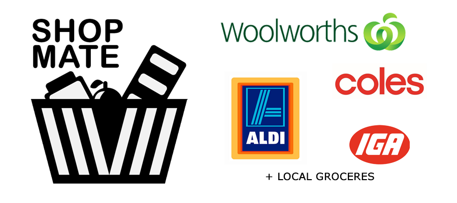
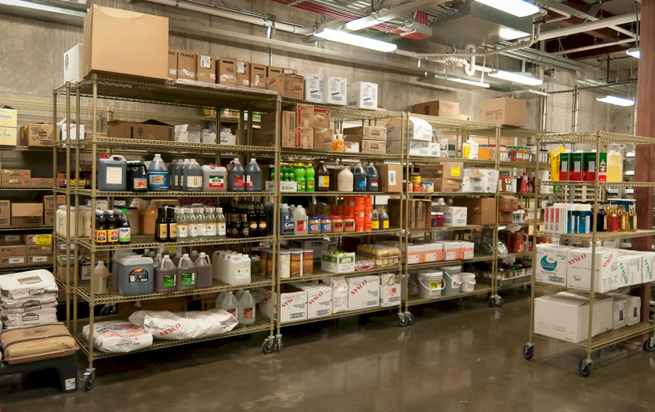

Project Overview

Introduction
Shop Mate is going to be designed to be a multipurpose shopping and nutritional app created to ease people into things such as shopping, keeping track of your inventory in your kitchen, suggested recipes based off your ingredients and even nutritional tracking for macronutrients.
Shopping List
The first feature that the Shop Mate team plan to implement is a basic shopping list, just simply adding products that you need to a list and storing it for later use when you go shopping. Later revisions of this feature will update to possibly include integration into online ordering at Coles or Woolworths, so with the click of a button you can add to cart what you have on your list for an online shop.

Proposed grocery network to be part of the ShopMate ecosystem.
Recipe & Kitchen Inventory
Down the track we plan to implement a feature that will let you manually add your kitchen inventory so that you can know what you have available for cooking and what you need to order. This feature works hand in hand with the recipe function which will, based off of available ingredients and a pre-selected meal provide the user with a list of recipes available for cooking. Taking this a step further once you have ticked off that you are cooking a given recipe, it will then remove the ingredients from your inventory and provide the user with an option to add what you run out of to the ‘Shopping List’ feature. The user will be able to save their favorite meals for easy access and whether or not you have the required ingredients for the recipe.
A later revision of this feature will add compatibility for perishable items such as chicken and milk that will register the day that you receive these items and provide notifications to the user after a certain time period based on the item to remind you to use it or that it may have expired. This feature would be fully customizable by the user allowing them to set custom date ranges for certain products for example you could set raw chicken for a 4–7-day range.
Nutritional Tracking
Another feature that the team is planning to implement is nutritional tracking for macro nutrients. With the items stored based off of information stored in our databases or based off the inventory that was ordered from the supermarkets our app will be able to calculate the macro nutrients in the meal and store it on your daily macronutrient tracker. A feature that will be added to this function is to set goals for weight-loss or muscle gain and various other options to provide an estimate of required macros.
Business+ Feature
The final feature that we plan to implement in our roadmap is the Business+ feature, a premium feature for businesses where it liaises with providers providing information on what a restaurant is running low on and ping notifications via email or some form of preferred communication like a smart ordering system. This feature would be advantageous for businesses to manage what ingredients and recipes are performing well and which are underperforming to trim their menu or even market the more successful products better.

Source: Rapids Wholesale